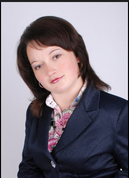
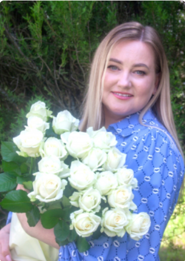
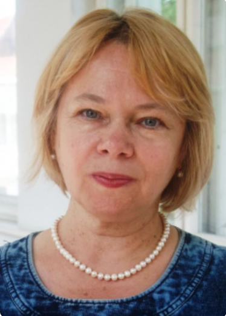

Ріба-Гринишин Оксана Михайлівна
Гарант програми, доцент

Штогрин Мар'яна Володимирівна
Член групи, доцент

Янишин Ольга Каролівна
Член групи, доцент
Глинянюк Аліна
Студентка групи ГФМ-24-1

Гарант програми, доцент

Член групи, доцент

Член групи, доцент
Студентка групи ГФМ-24-1